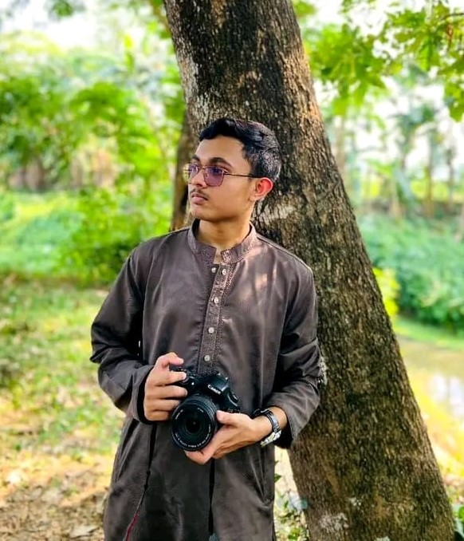
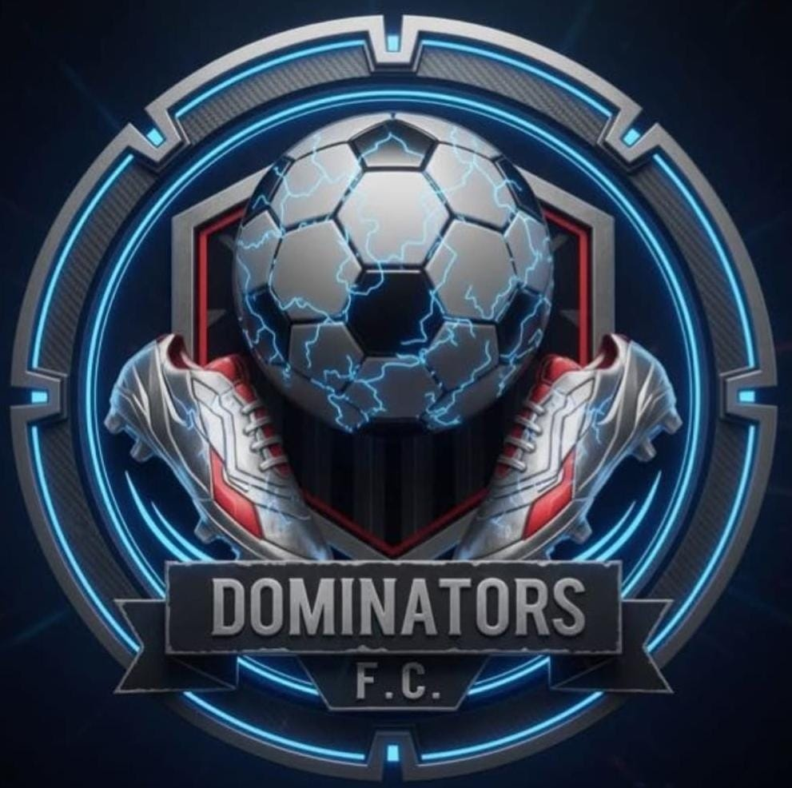
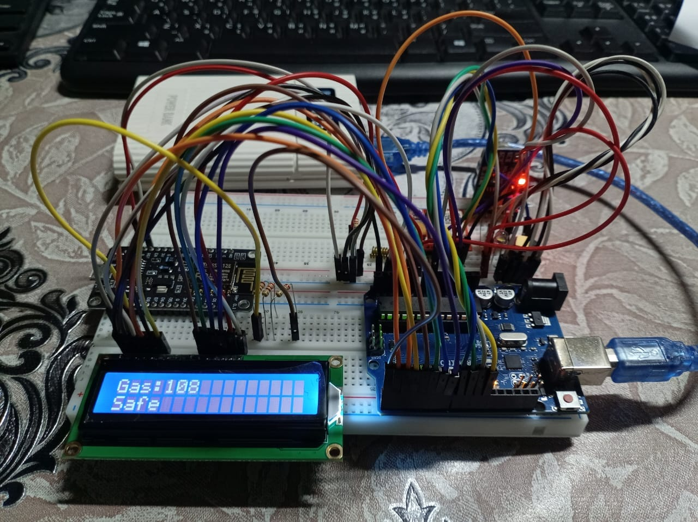
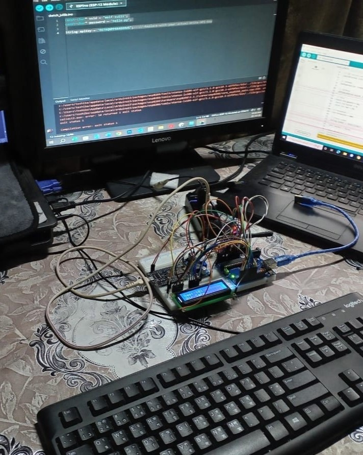
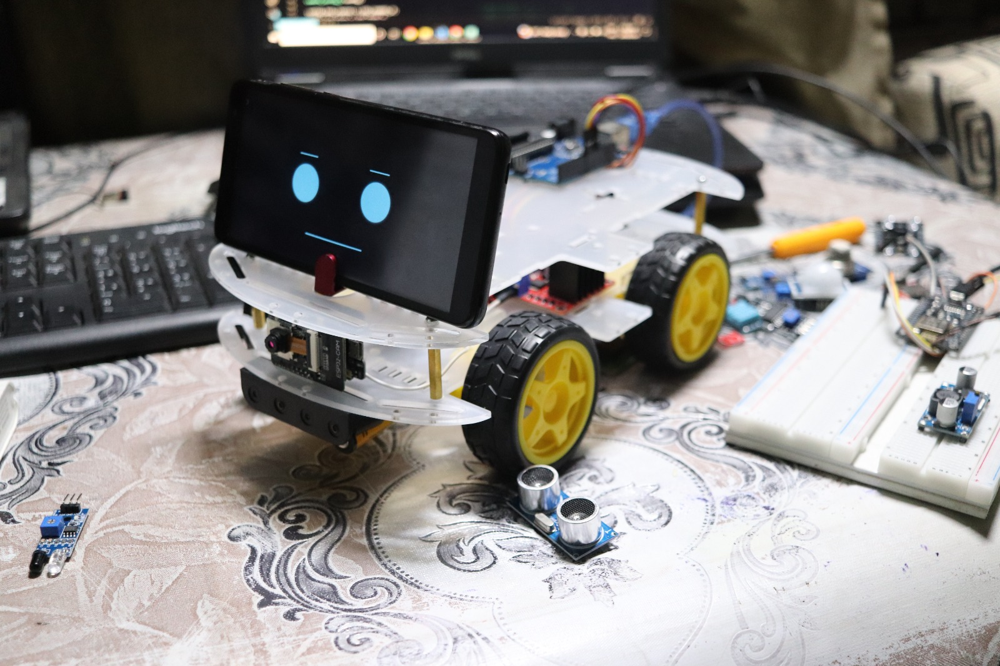
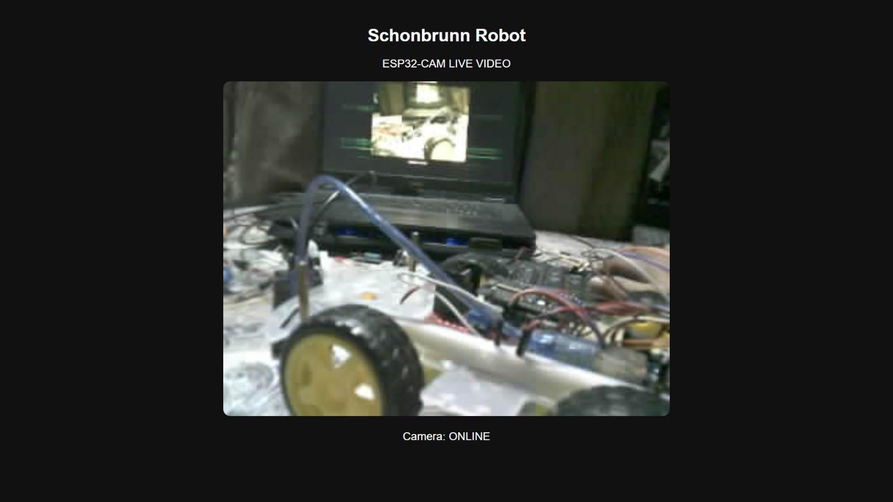

Student
Currently focused on learning, experimenting, and building practical skills alongside my studies.
[ STUDENT — WEB · PHOTO · IOT · ROBOTICS ]
I'm a student who enjoys building websites, learning technology, photography, and turning ideas into small real-world projects.

[ ABOUT ]
I'm Sharif Bin Aziz Shadman, a student interested in technology and creative work. I enjoy making websites, learning through hands-on projects, photography and exploring new experiences. I'm still learning, experimenting and improving with every project.
[ EDUCATION ]
Currently focused on learning, experimenting, and building practical skills alongside my studies.
Projects, photography, travel experiences, and hands-on practice help me turn ideas into real work.
[ SKILLS ]
Creating responsive websites and learning modern web development.
Exploring layouts, interfaces and visual experiences.
Capturing places, moments and details while exploring.
Learning IoT through electronics experiments and projects.
A practical skill learned through real-world experience.
Learning by testing ideas, fixing problems and building.
[ SELECTED WORK ]
A live website project created for a bakery business.
Visit Website ↗
[ IOT — ESP8266 ]
A closer look at the ESP8266-based IoT project — from the development board to the complete hands-on setup.


[ ROBOTICS — IRO BD 2026 ]
Competing in IRO Bangladesh Open 2026 under the "Cultural Heritage Service Robots" theme — where a robot is built from scratch on-site and paired with a synchronized animation story that shows it solving a real problem.


[ JOURNEY ]
Began learning how websites and digital projects are created.
Turned ideas into real websites and learned through practice.
Explored places and practiced capturing moments.
Experimented with electronics and built a IoT system.
Building a competition robot for IRO Bangladesh Open 2026.
[ CURRENTLY LEARNING ]
[ CONTACT ]
Have an idea, project or just want to connect? Feel free to reach out.
sha.dmanspie@gmail.com ↗